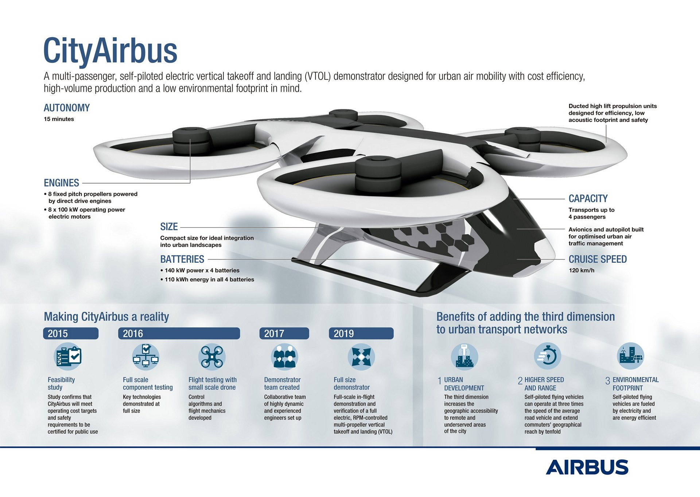

The company's main civil aeroplane business is conducted through the French company Airbus S.A.S., based in Blagnac, a suburb of Toulouse, with production and manufacturing facilities mostly in Europe
Recommended pages
Two hybrid-hydrogen turbofan engines provide thrust. The liquid hydrogen storage and distribution system is located behind the rear pressure bulkhead.
Two hybrid-hydrogen turboprop engines, which drive eight-bladed propellers, provide thrust. The liquid hydrogen storage and distribution system is located behind the rear pressure bulkhead.
The exceptionally wide interior opens up multiple options for hydrogen storage and distribution. Here, the liquid hydrogen storage tanks are stored underneath the wings. Two hybrid-hydrogen turbofan engines provide thrust.
At Airbus, we have the ambition to develop the world’s first zero-emission commercial aircraft by 2035. Hydrogen propulsion will help us to deliver on this ambition. Our ZEROe concept aircraft enable us to explore a variety of configurations and hydrogen technologies that will shape the development of our future zero-emission aircraft.
All three ZEROe concepts are hybrid-hydrogen aircraft. They are powered by hydrogen combustion through modified gas turbine engines. Liquid hydrogen is used as fuel for combustion with oxygen.
In addition, hydrogen fuel cells create electrical power that complements the gas turbine, resulting in a highly efficient hybrid-electric propulsion system. All of these technologies are complementary, and the benefits are additive.
The Future Combat Air System is a key instrument in ensuring future European autonomy and sovereignty in defence & security. Furthermore, it strengthens Europe as an industry and technology hotspot, not just in the defence sector, but with important spill-overs into the civilian world.
First of all, FCAS is progressing well as planned! The very first decision to develop a joint European Air Defence System of the next generation was taken by Chancellor Merkel and President Macron less than 3 years ago, in summer 2017. Since then, Germany and France have repeatedly underlined their ambition to realise this important European undertaking, which is considered an important – if not the most important – instrument of an integrated European Defence Policy.
A diagram showing the various components of Airbus’ Future Combat Air System (FCAS). At ILA 2018, the German and French Defence Ministers, Ursula von der Leyen and Florence Parly, signed a “High Level Common Operational Requirements Document” (HLCORD), defining the common expectations and requirements for a Next Generation Weapon System (NGWS) within a FCAS. In parallel, Airbus and Dassault Aviation, in their roles as National Industry Primes for Germany and France, agreed on a wide-ranging transnational industry collaboration to jointly lead this ambitious project, with Dassault Aviation leading the development of the New Generation Fighter (NGF) and Airbus Defence and Space as the main partner. In turn, Airbus is in charge of Remote Carriers (RC) with main MBDA as main partner and the System-of-System/Air Combat Cloud (SoS/ACC) with Thales.
Another important operational milestone followed in February 2019, with the signing of the Franco-German “Joint Concept Study” (JCS), the very first transnational contract for a FCAS, with a volume of 65m € and a duration of two years.
Only a few months later, in May 2019, during the Paris Airshow at Le Bourget, we experienced a remarkable step towards the Europeanisation of FCAS with Spain officially joining the programme.
And finally, in February 2020, we received the contract for the Demonstrator Phase 1A, with a volume of 155m € and a duration of 18 months, which signals the beginning of the technology development & maturation for a FCAS
And this is where we stand as of today. In the meantime, of course, negotiations with the governments and our industry partners have started for a Demonstrator Phase 1B that will build on the work currently performed in Phase 1A. Additionally, the full integration of Spanish industry in FCAS is under way.
All in all, and considering the magnitude & complexity of the programme, these are remarkable achievements within a relatively short period of time – which would have not been possible without the good & trustful collaboration of all partners involved!
CityAirbus is an all-electric, four-seat, multicopter vehicle demonstrator that focuses on advancing remotely piloted electric vertical take-off and landing (eVTOL) flight. The CityAirbus full-scale demonstrator conducted its first take-off in May 2019.
The idea for a compact “flying taxi” first came from our desire to take city commuting into the air in a sustainable way. Our team began by rethinking traditional aircraft architecture, creating a multirotor design based on electric motors. Thus, CityAirbus was born. To date, the CityAirbus sub-scale model has flown more than 100 test flights, which has proven the aerodynamic configuration of the full-scale prototype.
CityAirbus has a multicopter configuration that features four ducted high-lift propulsion units. Its eight propellers are driven by electric motors at around 950 rpm to ensure a low acoustic footprint. The single failure tolerant architecture ensures safety. Its cruise speed will be approximately 120 Km/h on fixed routes with up to 15 minutes of autonomy. It has a capacity of four passengers that is ideal for aerial urban ridesharing.
Webbsite made for webb development 1